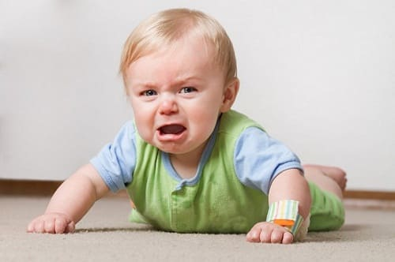

«Наша малышка кричит до тех пор, пока я не возьму ее на руки. Мои друзья советуют мне дать ей покричать, пока она сама не успокоится, но я чувствую, что это неправильно. Должна ли я позволять ей кричать?»
Вы чувствуете правильно, а ваши друзья советуют неправильно. «Пусть кричит, пока не накричится» худший совет, который можно получить. Он биологически неправильный. Исследования показали, что, когда мать слышит крик ребенка, у нее усиливается кровоток в молочных железах и она на гормональном уровне испытывает побуждение позаботиться о ребенке («позаботиться» здесь означает не только накормить, но и обеспечить комфортные условия).
Известно, что младенцы, которые получали адекватную и заботливую реакцию на свой крик, став старше, склонны меньше кричать и хныкать. А младенцы, воспитываемые в более сдержанном ключе, которых оставляли кричать, пока они не заснут, во исполнение жесткого режима дня, вместо того чтобы удовлетворить их потребности, более плаксивы в старшем возрасте. Давайте подробно разберем фразу «позвольте ребенку выкричаться», чтобы показать ее безосновательность.
«Пусть...» — единственный человек, который может решить, позволять ли и как долго позволить ребенку кричать, связанный с ребенком пуповиной, — мама. Человек, не имеющий биологической связи с вашим ребенком, не знающий вашего ребенка не вкладывающий усилий в ваше ребенка, не находящийся рядом с вашем почти 24 часа в сутки, когда он кричит не собирается утихомириться, такой человек не может вам советовать, как вам реагировать на крик вашего ребенка.
«кричит...». Крик младенца - это его язык, предназначенный для его выживания и обучения родителей. Анализ младенческого крика показал, что он состоит из двух фаз. начальные звуки называют побуждающими. Они пробуждают нежное ответное чувство у матери. Если эти начальные звуки не услышаны, многие младенцы переходят к следующей фазе крика, более пронзительному и возмущенному крику, который вызывает у матери скорее раздражение, чем нежность. Быстрый ответ на крик легче и для матери, и для ребенка.
«пока...». «Пока» — это не досаждающая привычка. Младенцы кричат для коммуникации, а не для манипуляции. «Пока» — эмоциональная и физическая необходимость. Когда ребенок кричит, он говорит вам: «Мамочка, мне что-то нужно» или «Мамочка, что-то не в порядке. Пожалуйста, исправь это».
«не накричится». Если вы позволяете ребенку накричаться, из ваших отношений с ним уходит нечто важное – доверие. Дать ребенку накричаться - это ситуация потерь: ребенок теряет веру в свою способность сообщить о проблеме, а мать — веру в свою способность соответственно ответить. Вообразите, себя на месте своего младенца и представьте, что его крик означает для него. Поскольку крик для младенца - это его инструмент общения, если его никто не слушает. У него есть два варианта: он может кричать сильнее и громче, издавая более беспокоящий сигнал, или он может закрыться, замолчать и стать «хорошим младенцем» (никого не беспокоящим). Мы заметили, что матери, которые пали жертвами метода «накричаться», в итоге становятся менее внимательными к своим детям поскольку они снижают свою чувствительность к крику ребенка, не беспокоит. Нечувствительность дает для матери новую проблему.; в результате растет дистанция между чувствительной матерью и недоверчивым младенцем.
Так как ваш младенец растет и постигает новые способы, чтобы сообщить о своих нуждах, то, как быстро вы отвечаете на его крик, станет сигналом для крика. Поскольку ребенком сотни раз уже отработали эту сигнализацию в первые месяцы жизни, а ребенок постепенно изучает методики самоуспокоения, в конце концов вы будете знать, когда крик является «сигналом тревоги» и требует немедленного реагирования, а когда - нет. Конечно, нет необходимости бежать на крик восьмимесячного младенца с той же скоростью, как к младенцу 7 дней от роду.
СОВЕТ ДОКТОРОВ СИРС: УЧИТЕСЬ УЗНАВАТЬ СИГНАЛЫ РЕБЕНКА ДО ТОГО, КАК ОН НАЧНЕТ КРИЧАТЬ Поскольку вы и ваш ребенок растет те вместе и, естественно, общаетесь с помощью системы «крик-ответ», вы начнете узнавать сигналы своего ребенка перед началом кривд» отдельные слова языка тела, такие как молотящие ручки или гримасы. Поскольку вы будете отвечать на эти сигналы, ваш ребенок узнает, что для удовлетворения его потребностей не обязательно переходить к крику. Фактически вы учите ребенка общению. |
ДВЕ ИСТОРИИ О «НАКРИЧИТСЯ» ИЗ НАШЕЙ ПРАКТИКИ
Некоторые младенцы кричат, потому что им больно. Мать шестимесячного Джонатана принесла его в наш офис для консультации. У Джонатана вскоре после рождения начались приступы крика, настолько сильные, что мать обращалась в отделение не отложной помощи, так как очень переживала. Знакомые убеждали ее, что она разбаловала ребенка и надо дать ему «накричаться». Несколько, врачей сказали ей, что она излишне чувствительная мать. Но она была настоящей матерью. Беседу она начала со слов: «Доктор Билл, я знаю, что с моим младенцем что-то не так. Его крик говорит мне об этом...» Мать была права! Всестороннее обследование выявило, что Джонатан страдал тяжелой Гастроэзофагальный рефлюксной болезни (ГЭРБ). Он кричал от боли. К моменту постановки диагноза у Джонатана уже были язвы в пищеводе от кислоты, разрушившей его слизистую.
Остерегайтесь «обучателей» младенцев. Роберт и Мэри принесли к нам в офис свою трехмесячную дочь Сьюзен для планового осмотра. Я (доктор Билл) наблюдал Сьюзен с рождения и знал, что эта семья вполне благополучная и счастливая. Первым признаком изменением стало то, что раньше мать носила Сьюзен в слинге, а теперь они несли ее в пластмассовой детской переноске, и она бултыхалась где-то далеко внизу между их ногами. Затем отец с гордостью сказал: «И она спит всю ночь напролет». Осматривая Сьюзен, я заметил, что она выглядит отрешенной. Она избегала контракта глаза в глаза и не хотела общаться. Ее вес и рост лишь слегка отличались от данных предыдущего осмотра.
Основываясь на этих трех признаках, я спросил родителей, не изменили ли они свой подход к уходу за младенцем. Рассказывая, они упомянули, что прошли в группу обучения младенцев, где их учат: «Не позволяйте своему младенцу управлять вами», «Если вы дадите младенцу накричаться, он научится успокаивать себя сам» и «Если вы приучите ее к режиму, это очень облегчит вашу жизнь».
При осмотре месяц спустя Сьюзен снова процветала. Показатели роста и развития соответствовали возрастным. Отец насмешливо заметил: «Она теперь совсем не такой «хороший младенец». Все мы знали, что он имел в виду: Сьюзен кричала, чтобы сообщить о своих потребностях, и теперь они соответственно удовлетворялись.

СОВЕТ ДОКТОРОВ СИРС: СТАНЬТЕ НА МЕСТО СВОЕГО РЕБЕНКА Самый полезный совет, который семья Сирс может дать новоиспеченным родителям, состоит в следующем: всякий раз, когда вы не знаете, как реагировать на поведение младенца в определенной ситуации, сразу же спросите себя: «Если бы я был моим младенцем, какого ответа я бы ждал от своих родителей?» Следуйте указаниям инстинкта, и вы практически всегда справитесь с проблемой. |
Здоровье ребенка от докторов Сирс / Сирс У. и др.